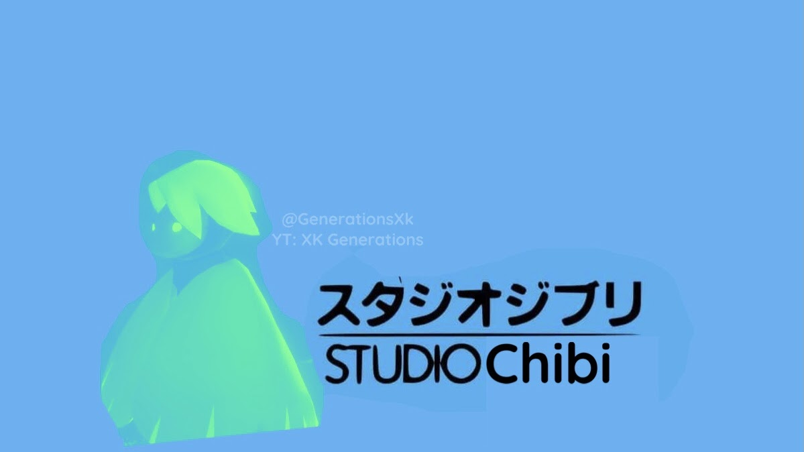
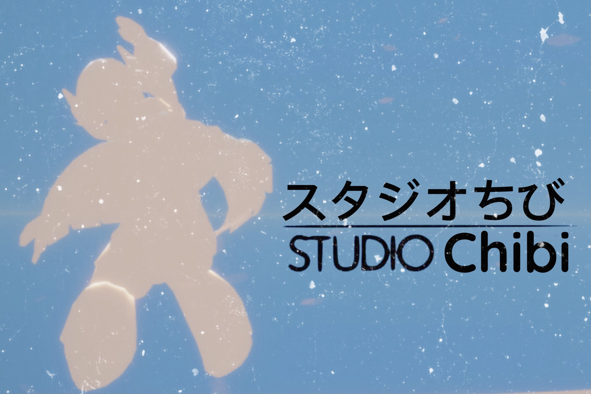

Sky Rewind 2021
Thursday, December 30, 2021
Studio Chibi created an even larger version of the previous year's project, Sky Rewind 2020, to celebrate the history of Sky and spread hope in the years to come.
Studio Chibi is a collective of some of the most influential content creators in the Sky: Children of the Light community. Founded by British Sky YouTuber XK Generations, the group was built through his efforts to connect with other leading creators in the community. Among Studio Chibi’s most recognized projects is the Sky YouTube Community Rewind, which even caught the attention of thatgamecompany—the developers behind Sky, Journey, Flower, flOw, and Cloud.
The mission of Studio Chibi is to unite every corner of the Sky community and celebrate its creativity, culture, and connection to thatgamecompany. To achieve this, the group brings together creators from many different backgrounds: meme makers like Crafting Kitten and Emptea, tutorial specialists such as BluSky and ThySkyGuy, speedrunners including Aztcc and Cribley, and update experts like Toyz and JaneSky.
These creators represent diverse voices from across the globe—stretching from America to Indonesia and beyond. With this international reach, Studio Chibi has become a community-driven organization dedicated to inspiring both content creators and players worldwide.
Studio Chibi is run through the XK Generations Channel. Click here to view the channel!


Thursday, December 30, 2021
Studio Chibi created an even larger version of the previous year's project, Sky Rewind 2020, to celebrate the history of Sky and spread hope in the years to come.
Saturday, May 15, 2021
To celebrate thatgamecompany's 15th anniversary, Studio Chibi developed a video honoring their achievements as a game company.
Saturday, December 26, 2020
To celebrate how far Sky had come in 2020, Studio Chibi created a video featuring one of the largest collaborations in the Sky community.